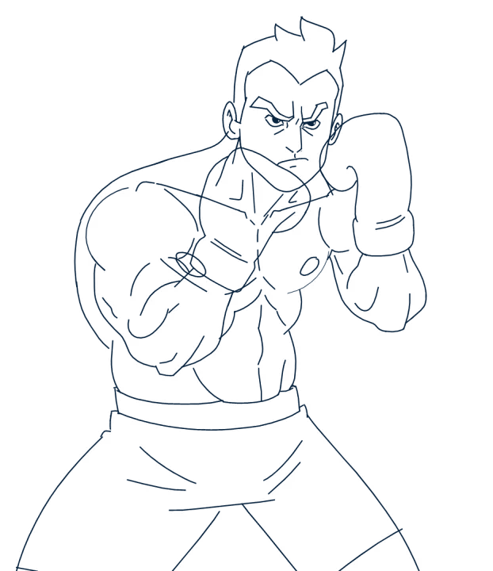
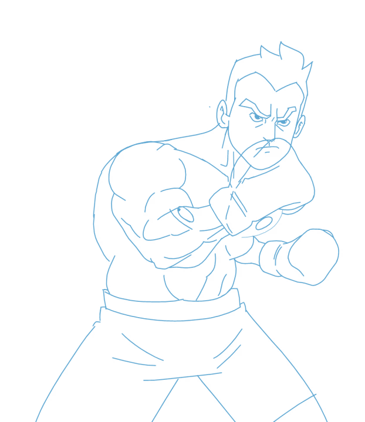
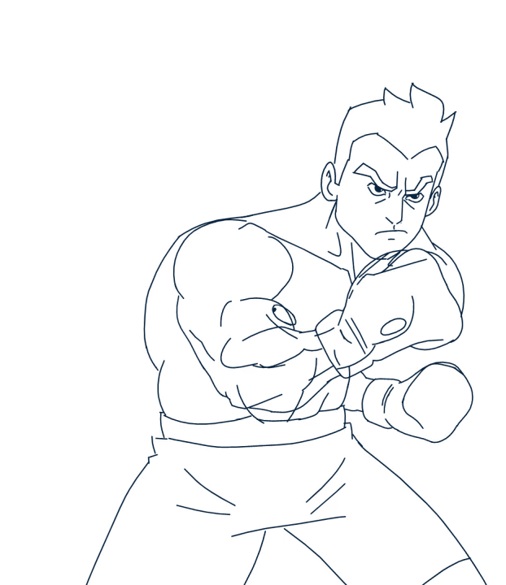
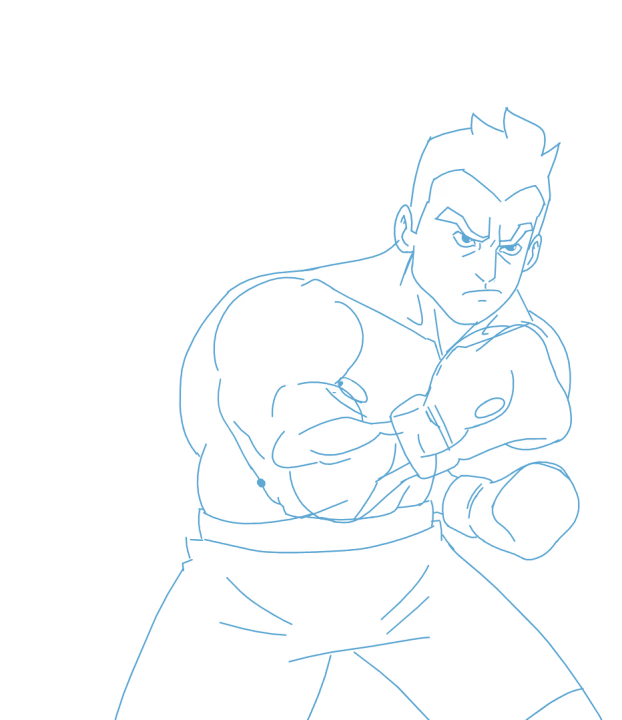
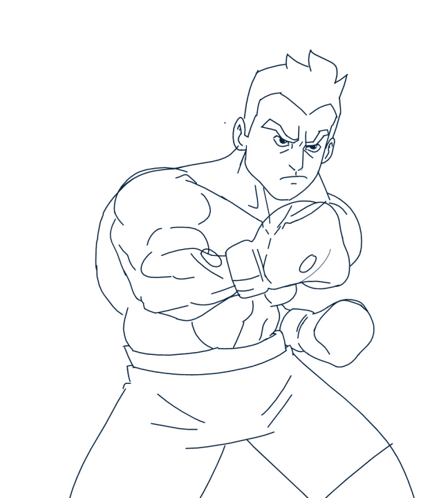

Rithwick Sethi
Co-founder, CEO
- MS AI Engineering at CMU
- Built AI and automation tooling at Apple
- Published 7 research papers
Rabbit Labs — in-betweening for 2D animation
Your animators draw the keys. We draw the in‑betweens, on their timing, as clean vector lines they can edit, keep or retake.
Animators draw the keys. We draw everything in between.





Drawn by the animator. Keys fix the pose and the timing.
A real hand-drawn jab, frames 43–53. Every drawing here is the artist's, including the in-betweens: they show the job, not model output. Drawings: Blender Studio, CC BY 4.0.
Why
One second of animation is up to 24 drawings. Almost every one is still drawn by hand.
artist-hours to draw one 22-minute TV episode.
of those hours go to the in-betweens, the drawings between the keys.
Our base case: give each animator 10 hours a week back and the same team makes four episodes in the time of three.
How it works
01
Your key drawings as vector line art (SVG or Grease Pencil), with your exposure sheet. Holds and timing stay yours.
02
Our model matches each line between the keys and moves it along the motion, on the frames your timing calls for.
03
Point at a wrong line and pick a retake. Only that line is redrawn. Lock anything you've fixed by hand.
What stays yours
Your timing. Your lines. Your building.
We draw on the frames your sheet asks for. Output is vector, so nobody redraws a frame for a note. The model runs on your own machines, and your art is never used for training without your permission.
Measured, not promised
of drafts pass our automatic check on 3D-rendered characters the model has never seen (252 of 306).
per in-between, on a laptop.
Loose hand-drawn pencil is harder, and that's where we're improving fastest.
Team
Co-founder, CEO

Co-founder, CTO

Co-founder, COO
Try it on one of your shots
Send us two keys →and a timing chart. We'll send back editable in-betweens.